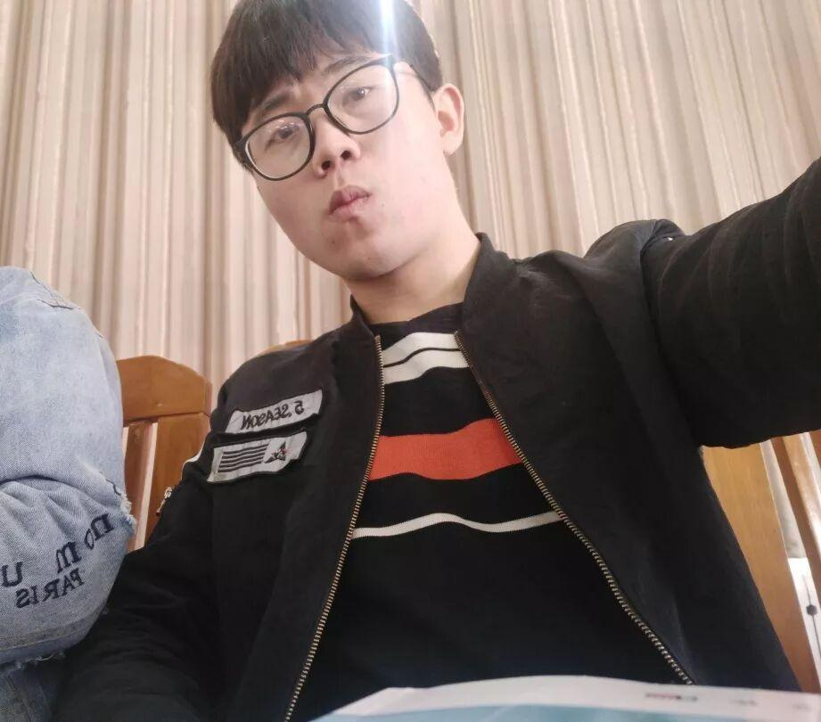
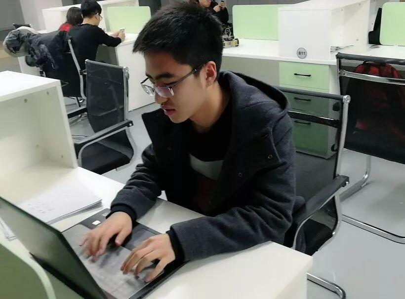
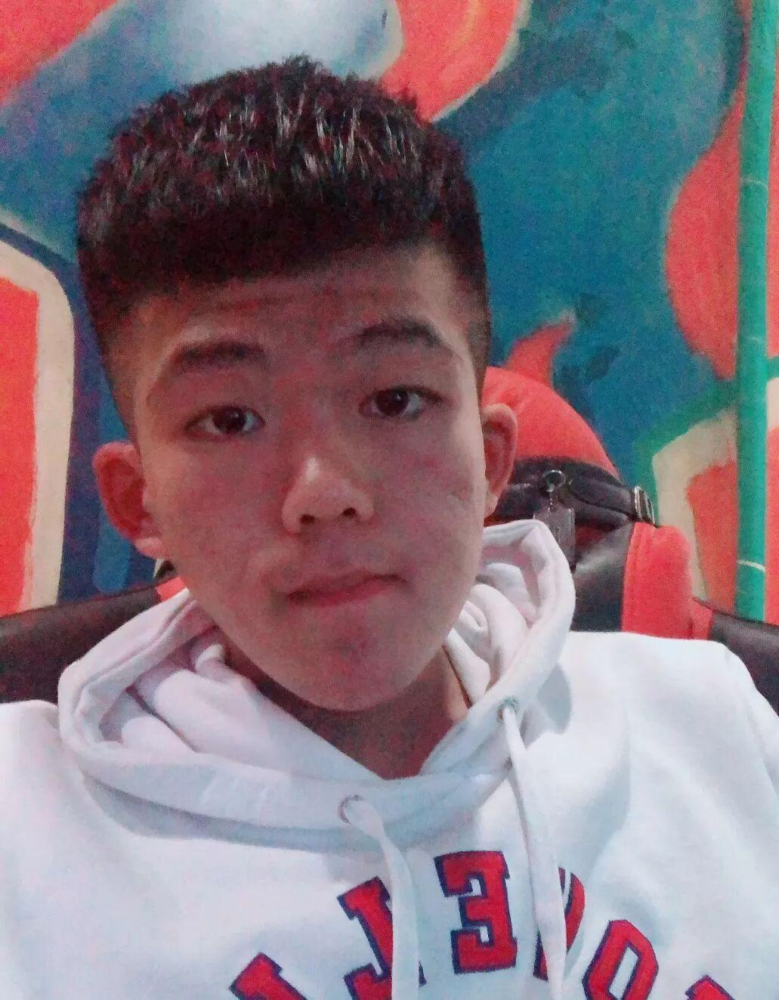
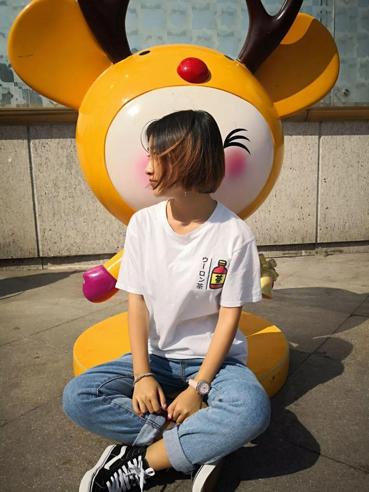
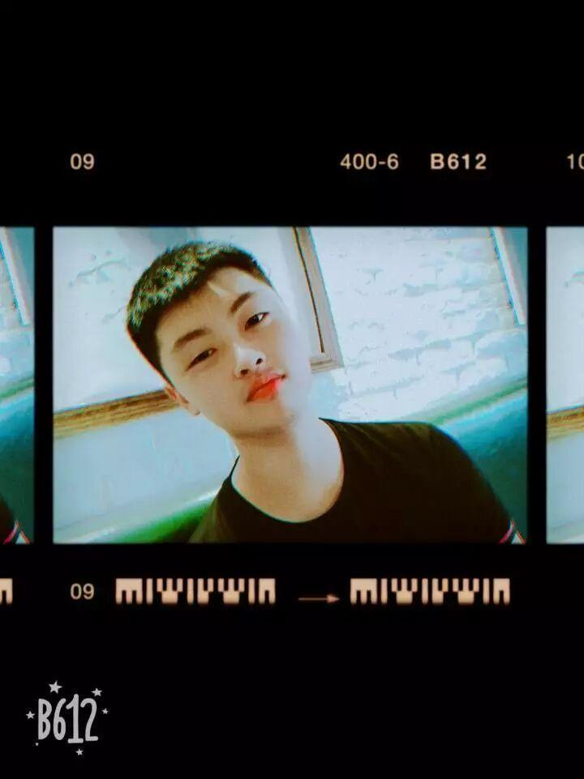

人事部——一个有爱的部门

再不点蓝字关注，机会就要飞走了哦
佛说：前世五百次回眸，才换来今生的擦肩而过。如果真是如此，那我们人事部愿意用下辈子、下下辈子、下下下辈子的时间，再换来与你相遇、相知、相爱、相守！

沈理电协
人事部
接下来让我们介绍下这个有爱的部门
人事部主要职能
负责社团人员信息管理
负责社团日常活动人员的安排通知
负责社团电协杯、电子设计大赛以及其他比赛和活动的报名信息整理、汇总
与社联对接，按时上交例会申请表
负责发布各种活动通知，必要时通知到每一个社团成员
负责每周五教学活动以及社团其他活动的签到
♡
牛栋鑫

那些你一笑就跟着你笑的不是傻子就是真的爱你。作为电协人，电协有笑，我们一直在笑，我不是傻子，我是真的爱你！电协！我爱电协！

十

徐紫阳
电协是电控和机械的舞台，每一个不曾起舞的日子，都是对人生的辜负。
李硕

大家好，我是李硕，是大二人事部的老油条了，来自光电信息科学与工程专业，热爱打游戏，自带中二气息。我中单贼稳，欢迎来找我一起玩~


电

朱宇宁
大家好，我是17人事朱宇宁，来自自动化电气工程学院。电协陪我从南到北流年似水，赠我细水长流温暖如斯。希望大家在电协融洽相处，共创辉煌！
杨杰
大家好，我是自动化与电气工程学院电科二班的杨杰，一枚来自内蒙古的妹子，性格开朗活泼，在电协的第二个年头，结识了许多有趣的人，希望可以陪电协一起走下去。

♡

芦艳阳
机械工程学院4班芦艳阳，待人谦和有礼，做事雷厉风行。平时喜欢旅游，听音乐，还会一点点滑板，希望以后可以和大家打成一片。
感

我是来自自动化与电气工程学院的隋鑫缘，是人事部的一名美少女干事。青春无悔携手同行，祝愿电协未来的N个十年越来越好！
谢

大家好！我是刘兴健，来自机械工程学院，爱笑爱闹，单身等撩。实现梦想，付出无悔，电协加油！
有


你

汪开元
大家好！我是人事部汪开元，来自河南的双鱼男，很高兴能为大家服务，也希望可以在这个过程中可以学到更多。关于电协，没有无尽的raid，没有名誉场的追逐，却有一颗pvp的心，以自己的方式享受着。时光见证我们的努力，也见证我们的成长。
张浩

我是张浩，99年中国制造，采用人工智能，各部分零件齐全，运转稳定，经二十年的运行，属质量信得过产品，现隶属信息科学与工程学院，最新版本由电协更新。
编辑:李亭熹
欢迎扫码关注哦